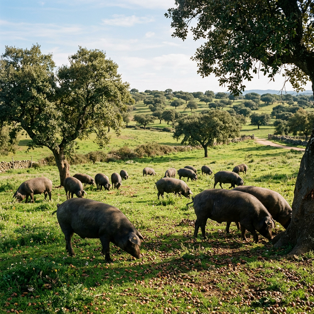

Sabores de la Tierra
La despensa cacereña es rica, intensa y de raíces pastoriles. Cáceres fue Capital Española de la Gastronomía en 2015.


Torta del Casar
El queso estrella. Un queso de oveja de pasta blanda, muy cremoso y de sabor intenso, cuajado con cardo silvestre. Se come destapando la corteza superior y untando su interior.

Migas Extremeñas
El plato pastoril por excelencia, elaborado con pan candeal, ajo, pimentón de la Vera, panceta y chorizo. A menudo se acompañan con pimientos fritos o incluso uvas.

Cerdo Ibérico
La base de los embutidos locales y de platos tradicionales como la prueba de cerdo. La dehesa extremeña es el hábitat natural donde se cría este animal único.

Pimentón de la Vera
El oro rojo (pimentón) le da ese carácter único a la cocina local. Con su proceso de secado al humo de encina o roble, es un ingrediente indispensable con Denominación de Origen.